Contenido
[ocultar]Introducción
Biblioteca de Módulos y objetos en Openscad para facilitar el diseño.
Componentes
Bcube.scad: Cubos biselados
| Más información |
|---|
| 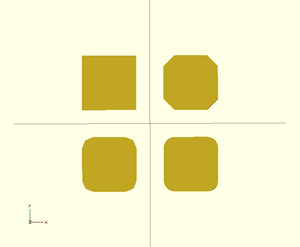 Cubo biselado con mismo radio pero diferentes resoluciones (click para ampliar) |
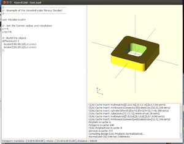 Pieza hecha a partir de cubos biselados (click para ampliar) |
 (click para ampliar) |
 Cubo biselado, con vaciado interior biselado también (click para ampliar) |


Vector.scad: Vectores
| 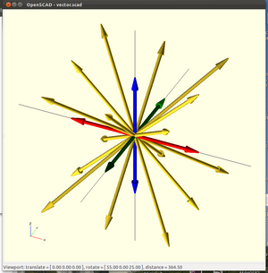 22 vectores apuntando a diferentes direcciones (click para ampliar) |
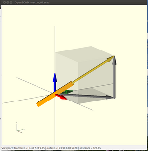 Probando los vectores y la orientación de un elemento (click para ampliar) |
| 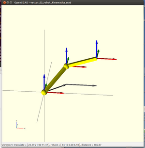 Boceto de robot junto con sus sistemas de referencia, y proyección sobre plano z=0 (click para ampliar) |
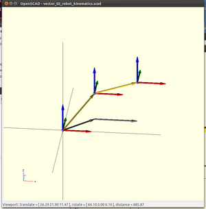 Cinemática del robot (click para ampliar) |


Introducción
Librería para la visualización de vectores y sistemas de referencia. Incluye también el operador orientate() para orientar cualquier pieza según la dirección dada por un vector. Esta librería es especialmente útil para el diseño de robots y estudio de sus cinemáticas, así como para facilitar el diseño de piezas complejas mediante la visualización de vectores auxiliares o sistemas de referencia.
API
- vector(v, l, l_arrow): Dibujar el vector v. l_arrow es la longitud de la flecha. Hay dos modos de dibujo:
- Modo 1: Cuando el parámetro l es 0, v especifica el vector cartesiado. Se dibuja un vector que va desde el origen y que tiene su punta en las coordenadas indicadas por v
- Modo 2: Cuando l es distinto de 0, se dibuja un vector en la misma dirección que v, con una longitud de l
- Ejemplos de uso:
vector([10,20,30]); //-- Dibujar vector cartesiano vector([10,20,30],l=50); //-- Dibujar un vector en la misma dirección que el anterior, pero de longitud 50
- frame(l,l_arrow): Dibujar un sistema de referencia con 3 vectores de longitud l. El parámetro l_arrow indica la longitud de las flechas.
- Ejemplo:
frame(l=10);
- orientate(v,roll): Operador para orientar cualquier objeto según la dirección dada por v, y rotado un ángulo roll alrededor del eje definido por v
- Ejemplo:
orientate([1,1,1]) cube([10,10,10])
Dibujar un cubo de 10 de arista y orientarlo en la dirección dada por el vector [1,1,1]
Attach.scad: uniendo piezas
| 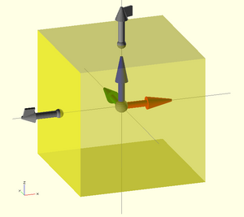 Fig. 1: Parte principal (cuerpo) en la que se han definido 2 connectores (click para ampliar) |
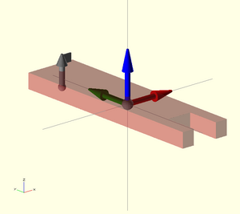 Fig. 2: Parte secundaria. Se ha definido 1 conector (click para ampliar) |
| 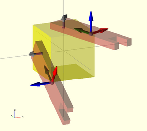 Fig. 3: Parte principal con dos piezas en sus conectores (click para ampliar) |
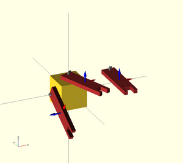 Fig. 4: La pieza secundaria y el objeto final (click para ampliar) |
| 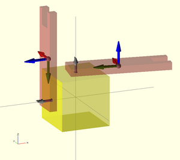 Fig. 5: Cambio en los ángulos de los conectores (click para ampliar) |
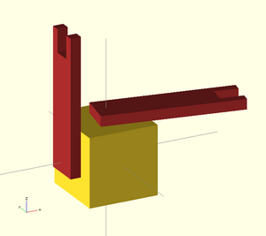 Fig. 6: Misma figura, pero en modo no-debug (click para ampliar) |


Introducción
El operador attach permite conectar dos piezas en las que se han definido conectores. Hace que el código sea más legible y fácil de entender.
Ejemplo
Partimos de la pieza principal, que en este ejemplo usaremos un cubo. Queremos unir al cubo otras dos piezas, una en la parte superior y otra en la izquierda. Primero definimos los conectores: son los elementos donde se conectarán las piezas.
Un conector consta de 3 componentes: El punto de anclaje, el eje de unión y el ángulo de giro. Para nuestro ejemplo definiremos los dos conectores c1 y c2 así:
//-- punto eje ángulo c1 = [ [0,0,10], [0,0,1], 20 ]; c2 = [ [-10,0,0], [-1,0,0],-30 ];
Para hacerlo más fácil, podemos invocar al comando connect() para verlos gráficamente junto con nuestra pieza:
connector(c1); connector(c2);
El resultado se muestra en la figura 1. A continuación hacemos lo mismo para otra pieza. En esta solo definimos el conector a:
a = [ [0, 2,2], [0,0,1], 0 ];
Para "depurar" podemos ver tanto el conector como el sistema de referencia de la piza (Figura 2).
Por último, ya podemos unir las piezas secundarias al cuerpo usando attach:
attach(c1,a) mi_pieza(); attach(c2,a) mi_pieza();
¡Y ya está! El código queda muy limpio y fácil de entender. Si ahora cambiamos los ángulo de los connectores (tercera componente) ocurre lo que se muestra en las figuras 5 y 6.
API
- connector(c) : Representar en pantalla el conector c. Se muestras sus tres componentes: una esfera para indicar el punto de anclaje, un vector para el eje de la unión y una marca en la cabeza del vector para el ángulo de giro.
- attach(c1,c2) mi_modulo(); : Se une "mi_modulo()" definido por el conector c2 con el conector c1 del cuerpo principal
Bevel.scad: Biselando lados y añadiendo refuerzos
| 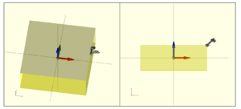 Fig. 1: Colocando los conectores para biselar el borde de un cubo (click para ampliar) |

| 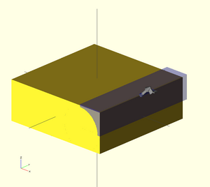 Fig. 2: Pieza cóncava colocada. ¡Listo para biselar! (click para ampliar) |
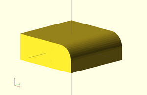 Fig. 3: ¡La arista está redondeada! (click para ampliar) |
| 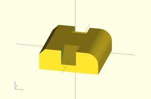 Fig. 4: Una caja con aristas y segmentos de aristas biselados (click para ampliar) |


Introducción
Hay dos operaciones que se realizan con mucha frecuencia en nuestros diseños: el biselado de los bordes tanto interiores como exteriores. Con el biselado de los exteriores logramos redondear las aristas y que los bordes no estén afilados. Con el biselado interior se consigue reforzar las uniones entre piezas ortogonales.
Ejemplo 1
Partimos de una caja. Queremos biselar la arista superior derecha. Lo primero es definir 2 conectores sobre la arista (en el mismo punto). Uno en la dirección de la arista (da igual el sentido) y el otro orgonal, apuntando hacia la bisectriz exterior:
//-- Dimensiones del cubo size=[40,40,15];
//-- Conectores //-- posicion direccion cero ec1 = [ [size[0]/2, 0, size[2]/2], [0,1,0], 0]; en1 = [ ec1[0], [1,0,1], 0];
Conviene visualizar los conectores para asegurarnos de que no nos hemos equivocado (Fig 1):
//-- Debug! connector(ec1); connector(en1);
y dibujar el cubo en transparente:
color("Yellow",0.4) cube(size,center=true);
Ahora llega el momento de la magia. Con el módulo bevel() se colocará una pieza cóncava sobre la arista (Fig 2)
bevel(ec1, en1, cr = 8, cres=10, l=size[1]+2);
Lo único que hay que hacer ahora es la diferencia, obteniéndose la arista biselada (Fig 3):
difference() {
cube(size,center=true);
bevel(ec1, en1, cr = 8, cres=10, l=size[1]+2);
}
En general, en una pieza se harán más de un biselado. Primero se definen todos los connectores y luego se usa un bloque de este tipo:
difference() {
my_part();
bevel(a1,a2...); //-- Biselar la arista a
bevel(b1,b2...); //-- Biserl a arista b
}
Como ejemplo, ver la (Fig 4).
Ejemplo 2
| 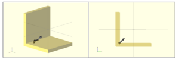 Fig. 5: Colocando los conectores para reforzar una pieza (click para ampliar) |

Vamos a reforzar una pieza. El procedimiento es similar. Empezamos visualizando la pieza y creando los conectores (visualizándolos para depurar) (Fig 5); En este caso el conector normal al eje de unión tiene que estar apuntando hacia la bisectriz interna
size=[30,30,30]; th = 3;
//-- Conectores ec1 = [ [0,-size[1]/2+th,-size[2]/2+th], [1,0,0], 0]; en1 = [ ec1[0], [0,1,1], 0];
//-- Ver los conectores para depurar connector(ec1); connector(en1);
//-- Dibujar la pieza a reforzar difference() { cube(size,center=true); translate([0,th,th]) cube([size[0]+2,size[1],size[2]],center=true); }
Ahora añadimos el refuerzo con este comando:
bconcave_corner_attach(ec1,en1,l=th,cr=8,cres=0);
| 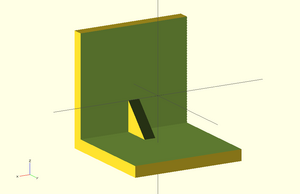 Fig. 6: Pieza con refuerzo |

Jugando con los parámetros (radio, resolución...) y añadiendo más conectores se obtienen diferentes tipos de refuerzos:
| 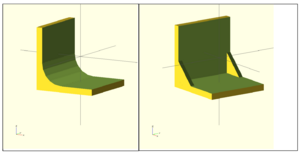 Fig. 7: Distintos refuerzos |

API
- bconcave_corner(cr=1,cres=4,th=1,l=10,ext_corner=false) : Obtener un esquina cóncava.
- bconcave_corner_attach (ec1,en1,l=th,cr=8,cres=0): Colocar una esquina cóncava como refuerzo
- bevel (ec1, en1, cr = 8, cres=10, l=size[1]+2): Colocar una pieza cóncaba para hacer el biselado de aristas exteriores
Repositorio
- Acceso al repositorio: https://github.com/Obijuan/obiscad
Autor
- Juan González Gómez (Obijuan)
Licencia
| |
Enlaces
Noticias
- 7/Sep/2012: Comenzada esta página